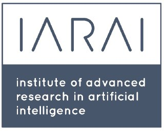
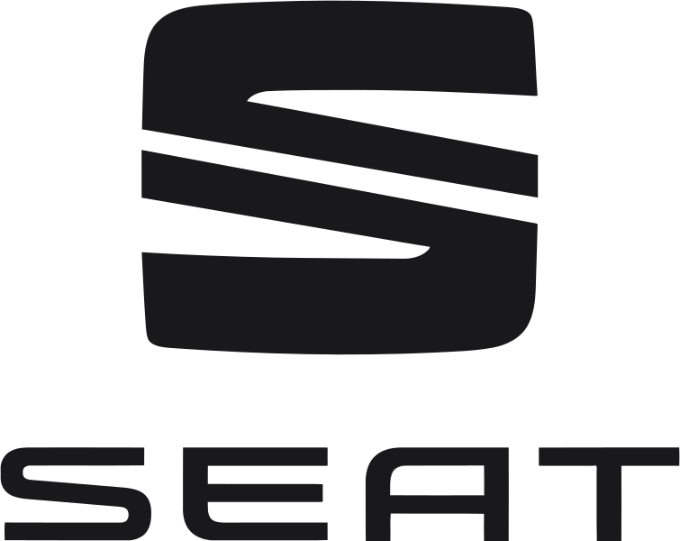
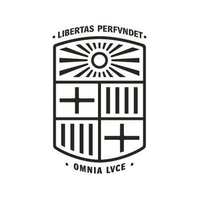

Experience
Founding AI Engineer
Impossible Inc March 2025 - Present SF, California, USA
In stealth with Maxime Coutte-Peroumal, Naval Ravikant, and a few other talented people: building foundational GenAI models that interact with the world in 4D.
UNISON
SF, California, USA
Lead Engineer, AI and Spatial Computing
June 2023 - March 2025
- Led a team of 9 PhDs and engineers from Apple, Meta, and Stanford to ship core models and algorithms for a spatial computing OS, including head tracking, hand tracking, speech-to-text, text-to-speech, scene reconstruction, and simulation.
- Built a multimodal spatial assistant for interacting with digital content in VR using LLMs, voice, eye tracking, and hand tracking.
- Built a distributed pub/sub system for real-time inference of large AI models in VR/AR.
- Developed proprietary tools for data capture, auto-labeling, and multimodal 3D data analysis.
- Built prototype VR/AR experiences that pushed the OS through realistic interaction scenarios and exposed performance, latency, and model-quality bottlenecks.
AI Engineer
May 2022 - June 2023
- Pioneered real-time 3D computer vision systems, including hand tracking, visual-inertial SLAM, and scene reconstruction.
- Co-designed a custom Time-of-Flight sensor for real-time 3D AI perception.
AI Scientist

IARAI - Institute of Advanced Research in Artificial Intelligence Feb 2020 - May 2022 Vienna, Austria / remote
- Created the video-encoding competition and benchmark Weather4cast NeurIPS 2022 with Prof. Sepp Hochreiter and Prof. David Kreil, including neural-network baselines for weather.
- Built user-friendly tools for retrieving and processing satellite data from Sentinel-5P.
- Co-organized the 1st Workshop on Complex Data Challenges in Earth Observation at CIKM 2021, with 25+ speakers, posters, and keynotes.
- Organized the Weather4cast competition from scratch for 300+ ML researchers at IEEE Big Data Cup 2021, designing the website funnel and scoring script to evaluate submitted predictions.
- Co-organized Traffic4cast competitions at NeurIPS 2020, 2021, and 2022. Published 3 articles.
- Co-organized Science4cast, a benchmark for predicting emerging science, with Prof. Mario Krenn.
Machine Learning & Data Scientist

SEAT, S.A. Sep 2017 - Sep 2020 Barcelona, Spain
- Designed a deep learning model that predicts traffic jams from past traffic, weather, and seasonality. Awarded paper at NeurIPS 2019 Competition Track with Prof. JL Larriba-Pey.
- Designed a hybrid model that recommends transportation modes using expert systems and ML, integrated with the user's calendar, weather, public mobility services, and private mobility services.
- Created a dashboard to monitor AI model performance, highlighting prediction errors, inference times, and worst-predicted users.
- Established a partnership between Waze, SEAT, and the city of Barcelona to enhance mobility prediction with planned events, such as soccer games, and improve routing around traffic disruptions.
- Spotted and corrected bugs in Barcelona's open traffic-loop-detector data, improving the public dataset used by the city and external mobility researchers.
Graduate Research Fellowship

Computer Vision Group @ University of Barcelona Sep 2016 - Jul 2017 Barcelona, Spain
- Won best master thesis award for a multi-task deep learning model recognizing lifestyle patterns, such as time spent eating, socializing, and sitting, from wearable cameras. Published 2 articles.
- Developed a web dashboard that automatically analyzed wearable-camera images and reported lifestyle patterns using our deep learning models.
- Added explainable AI views so users could see which image features drove the model's predictions, with Prof. Petia Radeva.
- Designed the deep learning model for an automatic nutrition diary app from pictures, with suggestions for healthy eating habits. Scored 2nd in a startup contest and published 1 article.
- Built scraping algorithms to create a Mediterranean food dataset with 115 dishes and 75,000+ images.
Data Scientist
Indra Sistemas, S.A. May 2014 - Feb 2016 Barcelona, Spain
Exploitation of the Commercial Segurcaixa Data Warehouse, Vidacaixa.
- Worked 30h/week while studying the double B.Sc. in Computer Science and Mathematics.
- Generalized PowerCenter processes, reducing errors and ETL workflow time by 10x.
- Built a project management tool for tracking and reporting time spent per project.
- Translated client requirements into operational reporting tools using SAP BO, PowerCenter, Oracle, and Control-M.